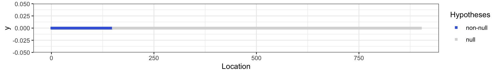
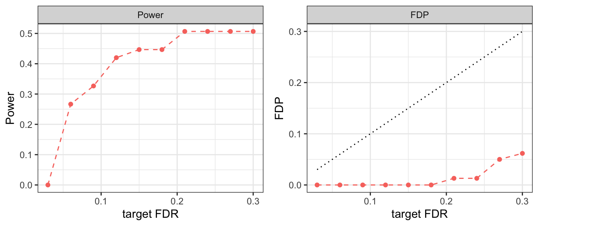
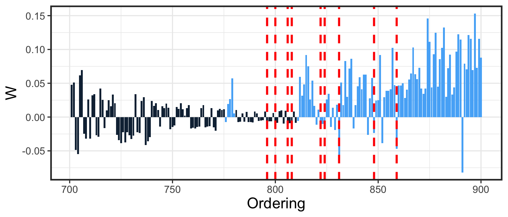

This notebook introduces how to use the adaptiveKnockoff R package. In this preliminary tutorial, we will focus on introducing how to use the adaptive knockoff wrapper with the default settings. We will generate synthetic data and construct knockoffs and feature importance statistics via the knockoff package. Then we show how to call the adaptive knockoff function and obtain results.
We need the following packages for later implementation:
library("knockoff")
library("gam")
library("randomForest")
library("ggplot2")
library("cowplot")
library("adaptiveKnockoff")The covariate matrix \(X\) is generated from a multivariate Gaussian distribution and the response \(y\) is generated from a linear model conditional on \(X\).
# Parameters
set.seed(2019)
n = 1000 # number of observations
p = 900 # number of features
k = 150 # number of signals
amp = 3.5 # signal amplitude
#Generate covariate matrix from a multivariate Gaussian distribution
mu = rep(0,p)
rho = 0.5
Sigma = toeplitz(rho^(0:(p-1)))
X = matrix(rnorm(n*p),n) %*% chol(Sigma)
#Generate the response y from a linear model.
nonzero = 1:k
beta0 = amp * (1:p %in% nonzero)*sign(rnorm(p)) / sqrt(n)
y.sample = function(X) X%*%beta0+rnorm(n,0,1)
y = y.sample(X)The features live on a real line and are indexed from 1 to p according to their location. Specially, the nonzero ones are all clusted at end, shown as the below figure: 
Consider a series of target FDR levels \(\{0.01,\ldots,0.3\}\):
alphalist = seq(0.3,0.03,-0.03)Set the side information \(U_j\) to be the index of feature \(j\):
U=1:pWe use the knockoff package to generate knockoff copy \(\tilde{X}\) and calculate the feature importance statistics \(W\):
Xk = create.gaussian(X,mu,Sigma)#generate knockoff Xk
W = stat.glmnet_coefdiff(X,Xk,y)#calculate feature importance statistics (LCD)Call adaptive knockoff function:
res = adaptiveKnockoff::adaptive_knockoff(W,U,fdr = alphalist)Calculate the resulting power and FDP:
fdp = c()
power = c()
for (i in 1:length(alphalist)){
if(res$nrejs[[i]]>0){
rej = res$rejs[[i]]
fdp = c(fdp,sum(beta0[rej]==0)/max(length(rej),1))
power = c(power,sum(beta0[rej]!=0)/max(k,1))
}else{
fdp = c(fdp,0)
power = c(power,0)
}
}The resulting power for different FDR target levels (in a decreasing order):
## [1] 0.5066667 0.5066667 0.5066667 0.5066667 0.4466667 0.4466667 0.4200000
## [8] 0.3266667 0.2666667 0.0000000The resulting FDP for different FDR target levels (in a decreasing order):
## [1] 0.06172840 0.05000000 0.01298701 0.01298701 0.00000000 0.00000000
## [7] 0.00000000 0.00000000 0.00000000 0.00000000Plot power and FDP versus the target FDR level: 
We can also plot the realized ordering determined by adaptive knockoff. The plot below contains the last two hundred features in the ordering.
adaptiveKnockoff::plot_ordering(res,nonzero,start_index = 701)